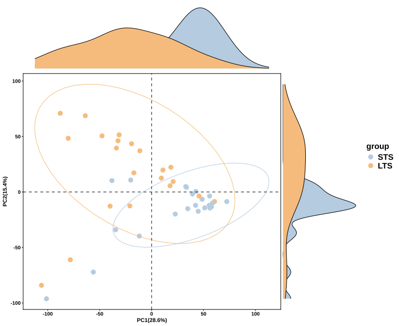
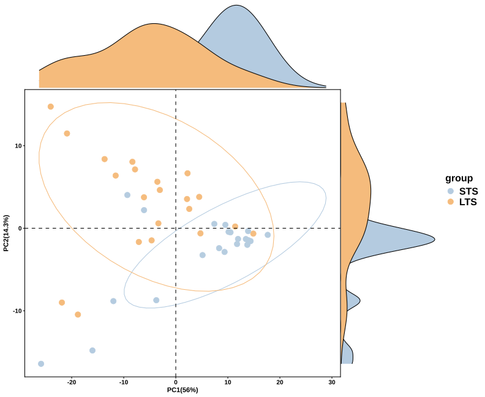
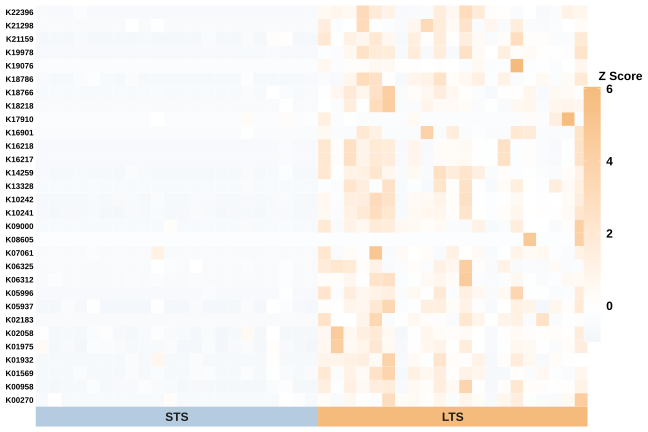
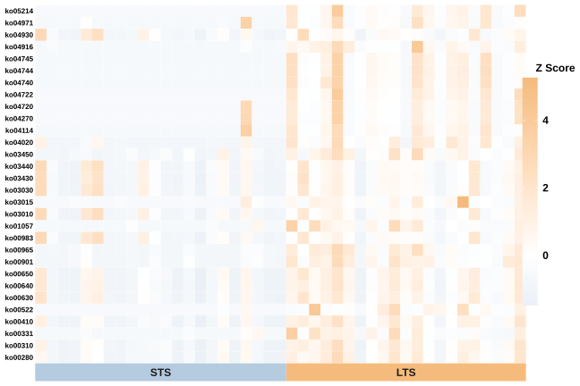
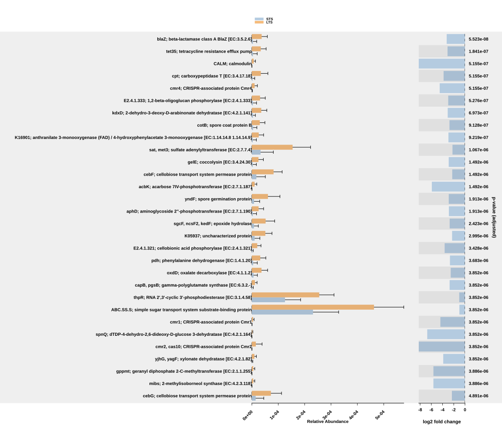
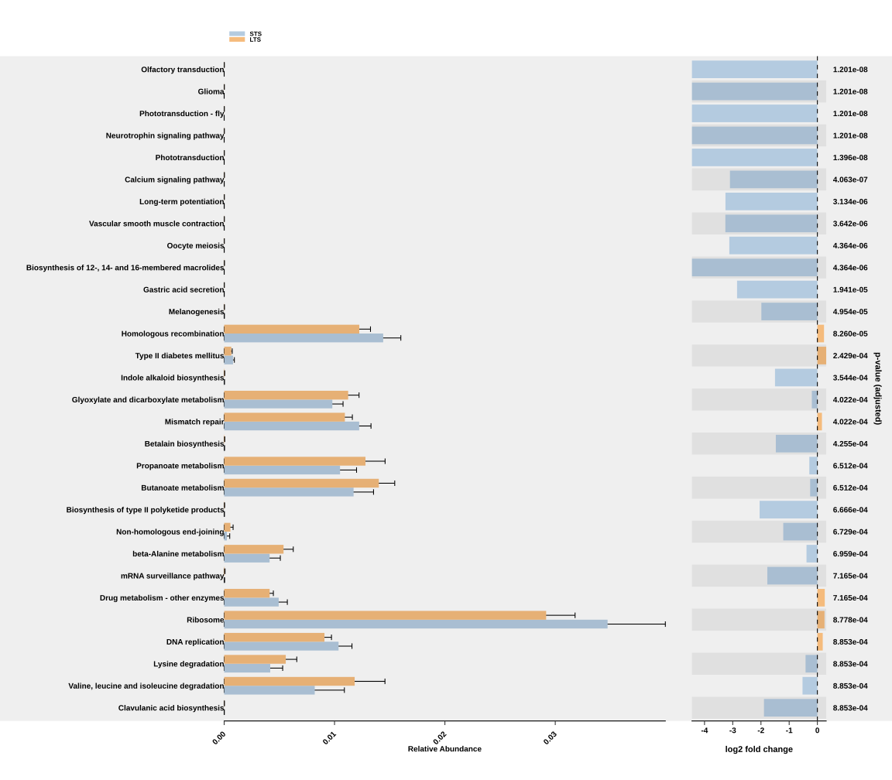

Demonstration Study (Standard)
demonstration-standard.RmdThis study follows the STS/LTS comparison at the community level. We first look across whole functional profiles, then inspect selected features and their group summaries. Unlike the stratified demonstration, these tables pool the ASV contributions within each sample.
Before running this study, follow Study
data and downloads. The code uses the extracted
MicroFun_demonstration_data_filtered folder.
1. Prepare the community profiles
library(MicroFun)
# Use the fixed vegan release in a fresh R session.
stopifnot(requireNamespace("vegan", quietly = TRUE),
getNamespaceVersion("vegan") == package_version("2.7.2"))
data_dir <- normalizePath("MicroFun_demonstration_data_filtered", mustWork = TRUE)
study <- new.env()
load(file.path(data_dir, "phyloseq_asv.RData"), envir = study)
meta <- study$metadata
cohort <- "MDA"
meta <- meta[meta$Cohort == cohort, , drop = FALSE]
reference <- "STS"
target <- "LTS"
meta$group <- factor(meta$group, levels = c(reference, target))
read_profile <- function(path, samples) {
x <- read.delim(path, check.names = FALSE)
x[[1]] <- sub("^ko:", "", x[[1]], ignore.case = TRUE)
stopifnot(!anyDuplicated(x[[1]]), all(samples %in% names(x)[-1]))
y <- as.matrix(x[, samples, drop = FALSE])
rownames(y) <- x[[1]]
stopifnot(is.numeric(y), all(is.finite(y)))
y
}
ko_abundance <- read_profile(
file.path(data_dir, "standard", "KO.tsv.gz"), meta$sample_name
)
ko_table <- data.frame(
function_id = rownames(ko_abundance),
as.data.frame(ko_abundance, check.names = FALSE), check.names = FALSE
)
kegg_abundance <- ko2kegg_abundance(data = ko_table)
table(meta$group)
out <- "MicroFun_standard_study"
dir.create(out, recursive = TRUE, showWarnings = FALSE)The reader removes the ko: prefix from KO IDs so they
match the local annotations and supplied feature lists. The KO and
metadata files use the same new sample identifiers. The figures and code
now use the filtered release. KO-to-pathway aggregation uses the
installed package’s bundled mapping. The separately supplied
KEGG_2026-11-04.tsv.gz is an alternative pathway snapshot
with different membership coverage; it is not the input used for these
displayed KEGG figures.
2. Fit and annotate the comparison
The examples below use Maaslin2, with STS as the reference. Set
chosen_method to another supported backend if it matches
your input and study design. Differential analysis options lists
LinDA, Lefser and the other available choices. PCA and heatmaps below
use the filtered inputs. The error-bar panels are supplied study
exports.
chosen_method <- "Maaslin2"
daa_ko_fit <- pathway_daa(
abundance = ko_abundance, metadata = meta, group = "group",
daa_method = chosen_method, reference = reference, p.adjust = "BH"
)
daa_kegg_fit <- pathway_daa(
abundance = kegg_abundance, metadata = meta, group = "group",
daa_method = chosen_method, reference = reference, p.adjust = "BH"
)
# Read KO names from the dictionary bundled with the installed package.
ko_reference <- new.env()
load(system.file("extdata", "KO_reference.RData", package = "MicroFun"),
envir = ko_reference)
ko_dictionary <- ko_reference$KO_reference
ko_dictionary <- ko_dictionary[!duplicated(ko_dictionary$KO), , drop = FALSE]
daa_ko <- daa_ko_fit
daa_ko$description <- ko_dictionary$KoDescription[
match(daa_ko$feature, ko_dictionary$KO)
]
missing_names <- is.na(daa_ko$description) | !nzchar(daa_ko$description)
daa_ko$description[missing_names] <- daa_ko$feature[missing_names]
daa_kegg <- pathway_annotation(
pathway = "KO", daa_results_df = daa_kegg_fit, ko_to_kegg = TRUE
)
saveRDS(daa_ko, file.path(out, "KO_annotated_results.rds"))
saveRDS(daa_kegg, file.path(out, "KEGG_annotated_results.rds"))
write.csv(daa_ko, file.path(out, "KO_annotated_results.csv"), row.names = FALSE)
write.csv(daa_kegg, file.path(out, "KEGG_annotated_results.csv"), row.names = FALSE)KO descriptions are available locally. The KEGG pathway annotation
call contacts KEGG through KEGGREST; academic users do not
need to apply for an API key. See mapping and network
access.
The display feature lists are included in the core archive and can also be downloaded as KO and KEGG CSV files.
ko_features <- read.csv(file.path(data_dir, "standard", "KO_figure_features.csv"))$feature
kegg_features <- read.csv(file.path(data_dir, "standard", "KEGG_figure_features.csv"))$feature
stopifnot(all(ko_features %in% rownames(ko_abundance)))
stopifnot(all(kegg_features %in% rownames(kegg_abundance)))
sample_groups <- factor(
meta$group[match(colnames(ko_abundance), meta$sample_name)],
levels = c(reference, target)
)3. Compare overall functional profiles
PCA at KO level
ko_variance <- apply(ko_abundance, 1, stats::var)
p_ko_pca <- pathway_pca(
ko_abundance[is.finite(ko_variance) & ko_variance > 0, , drop = FALSE],
meta, group = "group"
)
ggplot2::ggsave(file.path(out, "KO_pca.svg"), p_ko_pca,
width = 11, height = 9)
The first two components explain 28.6% and 15.4% of the variation, together accounting for 44.0%. Many LTS samples appear toward lower PC1 and higher PC2 values, while many STS samples occupy the opposite part of the projection. The groups overlap and both include dispersed observations. This view summarizes variation across KO profiles; it is not itself a test of a group difference.
PCA at KEGG pathway level
kegg_variance <- apply(kegg_abundance, 1, stats::var)
p_kegg_pca <- pathway_pca(
kegg_abundance[is.finite(kegg_variance) & kegg_variance > 0, , drop = FALSE],
meta, group = "group"
)
ggplot2::ggsave(file.path(out, "KEGG_pca.svg"), p_kegg_pca,
width = 11, height = 9)
At pathway resolution, PC1 explains 56.0% and PC2 explains 14.3%, for a total of 70.3%. The broad group pattern remains visible, with overlap and several samples away from the main concentrations. The larger percentage on PC1 describes a different feature space after aggregation; it should not be read as evidence that this analysis is more statistically significant than the KO analysis.
4. Inspect selected features across samples
Heatmap of selected KOs
p_ko_heatmap <- pathway_heatmap(
ko_abundance[ko_features, , drop = FALSE], meta,
group = "group", font_size = 8
)
ggplot2::ggsave(file.path(out, "KO_heatmap.svg"), p_ko_heatmap,
width = 11, height = 10)
Each row is a KO and each column a sample, arranged by STS/LTS group. Look for shifts shared by several samples as well as isolated high values. The row-wise z-score scale describes variation within each KO; a warm row is not necessarily more abundant than another row. Selection from differential results also means this panel is a view of selected features rather than an independent confirmation of group separation.
Heatmap of selected KEGG pathways
p_kegg_heatmap <- pathway_heatmap(
kegg_abundance[kegg_features, , drop = FALSE], meta,
group = "group", font_size = 8
)
ggplot2::ggsave(file.path(out, "KEGG_heatmap.svg"), p_kegg_heatmap,
width = 11, height = 10)
The pathway view gives a broader functional summary of the selected differences. Compare samples within each row and inspect whether the direction is consistent within a group. Related patterns across several pathways may partly reflect shared member KOs; the rows do not represent mutually exclusive portions of the community’s predicted functional abundance.
5. Examine group abundance summaries
The current package displays adjusted p-values in scientific notation
with p_value_bar = TRUE. Exact numeric values are also
saved in KO_annotated_results.csv and
KEGG_annotated_results.csv inside
MicroFun_standard_study.
Error-bar plot at KO level
p_ko_errorbar <- pathway_errorbar(
abundance = ko_abundance, daa_results_df = daa_ko,
Group = sample_groups, select = ko_features,
p_values_threshold = 0.05, order = "p_values",
ko_to_kegg = FALSE, x_lab = "description", p_value_bar = TRUE
)
ggplot2::ggsave(file.path(out, "KO_errorbar.svg"), p_ko_errorbar,
width = 16, height = 14)
The supplied KO export shows larger mean relative abundances in LTS for many of these features. Read the abundance panel together with the descriptive log2 ratio, whose direction follows the group order. With STS as the first factor level, a negative ratio means a larger mean in LTS. The function normalizes each sample using the full abundance table before selecting features.
Error-bar plot at KEGG pathway level
kegg_groups <- factor(
meta$group[match(colnames(kegg_abundance), meta$sample_name)],
levels = c(reference, target)
)
p_kegg_errorbar <- pathway_errorbar(
abundance = kegg_abundance, daa_results_df = daa_kegg,
Group = kegg_groups, select = kegg_features,
p_values_threshold = 0.05, order = "p_values",
ko_to_kegg = FALSE, x_lab = "pathway_name", p_value_bar = TRUE
)
ggplot2::ggsave(file.path(out, "KEGG_errorbar.svg"), p_kegg_errorbar,
width = 16, height = 14)
The pathway panel connects predicted abundance summaries to readable functional labels. A larger bar indicates a larger group mean, not necessarily the strongest modeled effect. Whiskers in this function extend from zero to the mean plus one standard deviation; they are not confidence intervals. Adjusted p-values are displayed in scientific notation. Use the exported result table for full numeric precision.
Community-level differences summarize all contributors together. Continue with the Stratified study to ask which genera and functions are linked within that total.